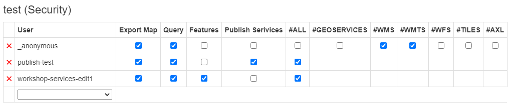
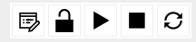

gView Server Verwalten¶
Zum Verwalten des gView MapServer wurde unter Postinstallation bereits ein Administrator Account angelegt.
Mit diesem User können:
neue Verzeichnisse angelegt werden
Dienste über die Web-Oberfläche publiziert werden
Dienste gestoppt und wieder gestartet werden
Logdateien der Dienste angezeigt werden
Clients angelegt werden.
Anmelden als Administrator¶
Die Anmeldung erfolgt über den Link Manage aus der Sidebar:

Manager Benutzeroberfläche¶
Ist man als Administrator angemeldet, erscheint die Manager Benutzeroberfläche etwa folgendermaßen:
Links werden die Verzeichnisse (Folder) angezeigt, in denen Services organisiert sind. Daneben werden die Services angezeigt, die sich in diesem Verzeichnis befinden.
Clients Anlegen¶
Clients sind bekannte WebAnwendungen, die auf die Dienste im gView MapServer zugreifen. Greift etwa eine WebGIS Anwendung auf Dienste zu, kann dafür ein Client erstellt werden. Jeder Client besitzt ein Secret, um sich bei Zugriffen am gView MapServer anzumelden. Client und Secret sind ähnlich wie User und Passwort zu verstehen, nur dass ein Client in der Regel keine physische Person, sondern eine Anwendung ist.
Bemerkung
Möchte man später nur bestimmten Anwendern Zugriff auf bestimmte Dienste geben, muss es in der jeweiligen Client Software (WebGIS) eine eigene Autorisierungsschicht geben.
In der Manager Benutzeroberfläche kann oben zwischen Services und Security gewechselt werden.
Unter Security können neue Clients angelegt bzw. bestehende Secrets geändert werden:

Dienstberechtigungen¶
Grundsätzlich sollten Services mit gleichen Eigenschaften (produktiv/test, spezielle Berechtigungen) innerhalb von Foldern organisiert werden. Berechtigungen können dann auf Ebene der Folder gesetzt werden und gelten für alle Services innerhalb des Folders. Alternativ müssen Berechtigungen einzeln für jeden Dienst eingestellt werden.
Bemerkung
Berechtigungen sind hierarchisch organisiert. Ist ein Recht über den Folder nicht möglich, steht dieses auch nicht in einem Dienst in diesem Folder zur Verfügung. Durch eine zusätzliche Berechtigung eines Dienstes innerhalb einer Gruppe kann nur weiter eingeschränkt werden.
Ob für einen Dienst oder einen Folder Berechtigungen gesetzt wurden, erkennt man am Schloss-Symbol. Ist das Schloss geöffnet, wurden bisher keine Berechtigungen gesetzt. Alle Dienste stehen dann jedem Benutzer zur Verfügung.
Klickt man beispielsweise für einen Folder auf das Schloss-Symbol, öffnet sich folgender Dialog:

Hier sind noch keine Berechtigungen gesetzt, das heißt jeder Benutzer/Client darf alle Dienste in diesem Folder uneingeschränkt nutzen.
Bemerkung
Eine Ausnahme ist hier das Publish Service Recht. Das kann nur einem Client zugewiesen werden. Nur berechtigte Clients und der Administrator können Dienste veröffentlichen.
Export Map: Kartenbilder dürfen für beliebige Ausschnitte abgeholt werden.
Query: Geo-Objekte können abgefragt und gesucht werden.
Features: Geo-Objekte können als Features heruntergeladen oder bearbeitet werden. Dies setzt als Schnittstelle GeoServices REST voraus. Welche Geo-Objekte bearbeitet werden dürfen, wird im Kartenprojekt (MXL) über gView Carto im Ribbon unter Options eingestellt.
Publish Service: Dienste dürfen für dieses Verzeichnis veröffentlicht und gelöscht werden.
Schnittstellen: Berechtigungen können hier für bestimmte Schnittstellen (WMS, …) eingeschränkt werden.
In der Auswahlliste kann ein bestehender Client ausgewählt werden. Eine Sonderstellung hat dabei der
Client _anonymous, der automatisch immer in der Auswahlliste angeboten wird.
Dieser Client wird immer als Berechtigung herangezogen, wenn keine
Anmeldung durch die Client Anwendung erfolgt. Für diesen Client kann etwa folgendes
eingestellt werden:
Das bedeutet, dass ein anonymer Client für die Dienste in diesem Folder Kartenbilder abholen
und Geo-Objekte abfragen darf. Für die Dienste stehen aber nur die
Schnittstellen WMS und WMTS zur Verfügung.
Im nächsten Schritt können Clients speziellere Rechte übertragen werden:
Wie oben ersichtlich können in diesem Dialog noch weitere Werte für den Folder eingegeben werden
(Online Resource (override) und Output Url (override)).
Damit können die Werte aus der _config/mapserver.json überschrieben werden. Das kann nützlich sein,
wenn ein Server vom Internet über unterschiedliche Urls erreichbar ist oder Dienste eines
Folders über eine Proxy publiziert werden. In der Regel können diese Werte leer gelassen werden.
Status von Diensten¶
Dienste können zur Laufzeit einen bestimmten Status aufweisen. Dieser ist in der Manage Benutzeroberfläche in der Liste der Dienste ersichtlich (siehe oben):
Idle: Der Dienst erscheint in der Liste „weiß“. Der Dienst steht zwar zur Verfügung, wurde allerdings noch nicht durch einen Client gestartet/aufgerufen.
Running: Der Dienst wurde initialisiert und läuft (grün).
Stopped: Der Dienst wurde vom Administrator gestoppt. Für Clients ist der Dienst nicht mehr sichtbar. In der Manage-Benutzeroberfläche wird der Dienst transparent dargestellt.
Zusätzliche Farben:
Rot: Der Dienst hat seit dem letzten Start Fehler verursacht.
Bei jedem Dienst stehen auch Befehlsbuttons zur Verfügung, über die beispielsweise der Status beeinflusst werden kann:
Logs: (Error) Logs für diesen Dienst anzeigen
Security: Berechtigungen für diesen Dienst setzen
Start: Dienst starten (falls gestoppt)
Stop: Dienst stoppen (ist danach nicht mehr für Clients sichtbar)
Refresh: ein Neustart des Dienstes wird erzwungen